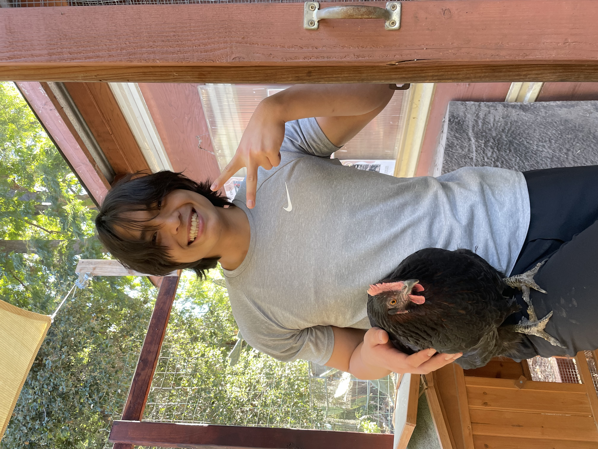

I’m Danny Kim, a 3rd-year Computer Science student at Occidental College with a minor in Mathematics. My journey into tech began in an unexpected way: after my mom accidentally cut the charger for our family laptop, I found myself tinkering with wires in a desperate attempt to play League of Legends. That initial fascination with fixing things, driven by my love for gaming, grew into a passion for repairing electronics.
At Occidental, I’ve explored a wide range of computer science topics, including algorithms, data structures, and software development. My math minor has enhanced my analytical and problem-solving skills, providing me with a strong foundation for tackling technical challenges.
Beyond academics, I’m an avid gym-goer who loves hiking and swimming; and I might even try skydiving soon to complete the trifecta of earth, water, and air! I’m always up for an adventure and enjoy anything that gets me moving or outdoors.